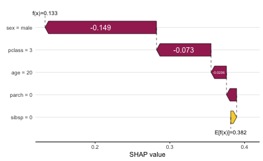
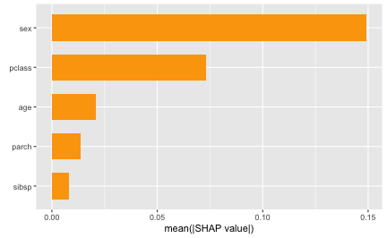
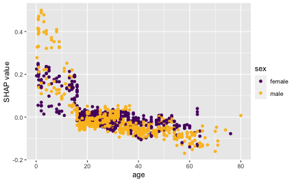
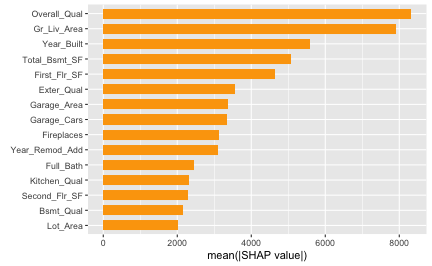
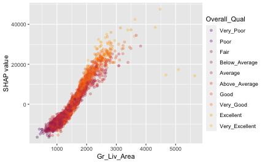

In this vignette, we’ll cover basic usage of fastshap for computing feature contributions for both local and global explanations, and show how to visualize the output using the shapviz package. To start, we’ll use the ranger package to build a random forest to predict (and explain) survivability of passengers on the ill-fated Titanic.
The source data (also
available in fastshap::titanic) contains 263 missing values
(i.e., NA’s) in the age column. The
titanic_mice version, which we’ll use in this vignette,
contains imputed values for the age column using multivariate
imputation by chained equations via the mice package.
Consequently, titanic_mice is a list containing 11 imputed
versions of the original data; see ?fastshap::titanic_mice
for details. For now, we’ll just use one of the 11 imputed versions:
## survived pclass age sex sibsp parch
## 1 yes 1 29.00 female 0 0
## 2 yes 1 0.92 male 1 2
## 3 no 1 2.00 female 1 2
## 4 no 1 30.00 male 1 2
## 5 no 1 25.00 female 1 2
## 6 yes 1 48.00 male 0 0
t1$pclass <- as.ordered(t1$pclass) # makes more sense as an ordered factorNext, we’ll build a default probability forest which uses the Brier score to determine splits.
library(ranger)
set.seed(2053) # for reproducibility
(rfo <- ranger(survived ~ ., data = t1, probability = TRUE))## Ranger result
##
## Call:
## ranger(survived ~ ., data = t1, probability = TRUE)
##
## Type: Probability estimation
## Number of trees: 500
## Sample size: 1309
## Number of independent variables: 5
## Mtry: 2
## Target node size: 10
## Variable importance mode: none
## Splitrule: gini
## OOB prediction error (Brier s.): 0.1341913Local explanations
To illustrate the simplest use of Shapley values for quantifying feature contributions, we need an observation to predict. While we can use any observation from the training set, we’ll construct an observation for a new passenger. Everyone, meet Jack:
jack.dawson <- data.frame(
#survived = 0L, # in case you haven't seen the movie
pclass = 3L, # third-class passenger
age = 20.0, # twenty years old
sex = factor("male", levels = c("female", "male")), # male
sibsp = 0L, # no siblings/spouses aboard
parch = 0L # no parents/children aboard
)Note that fastshap, like
many other machine
learning interpretability packages (e.g., iml), requires a
user-specified prediction wrapper; that is, a simple function that tells
fastshap how
to extract the appropriate predictions from the fitted model. In this
case, we want to explain Jack’s likelihood of survival, so our
prediction wrapper1 needs to return the conditional probability
of surviving from a fitted ranger object;
see ?ranger::predict.ranger for details:
pfun <- function(object, newdata) { # prediction wrapper
unname(predict(object, data = newdata)$predictions[, "yes"])
}
# Compute Jack's predicted likelihood of survival
(jack.prob <- pfun(rfo, newdata = jack.dawson))## [1] 0.1330587
# Average prediction across all passengers
(baseline <- mean(pfun(rfo, newdata = t1))) ## [1] 0.3815068
# Difference between Jack and average
(difference <- jack.prob - baseline)## [1] -0.2484481Yikes, Jack isn’t predicted to have fared too well on this voyage, at least compared to the baseline (i.e., average training prediction)! Can we try to understand why Jack’s predicted likelihood of survival is so much smaller than the average? Of course, this is the difference Shapley-based feature contributions help to explain.
To illustrate, we’ll use the explain() function to
estimate how each of jack features2 (i.e., his age and sex) contributed to the
difference:
X <- subset(t1, select = -survived) # features only
set.seed(2113) # for reproducibility
(ex.jack <- explain(rfo, X = X, pred_wrapper = pfun, newdata = jack.dawson))## pclass age sex sibsp parch
## [1,] 0 -0.006721834 0 0.03017177 0The fastshap package
uses an efficient version of the Monte-Carlo (MC) algorithm described in
@strumbelj-2014-explaining. Consequently,
for stability and accuracy, the feature contributions should be computed
many times and the results averaged together. To accomplish this, simply
set the nsim argument to a reasonably high value (i.e., as
much as you can computationally afford). Below we compute 1000
Shapley-based feature contributions for Jack and average the
results:
set.seed(2129) # for reproducibility
(ex.jack <- explain(rfo, X = X, pred_wrapper = pfun, newdata = jack.dawson,
nsim = 1000))## pclass age sex sibsp parch
## [1,] -0.07878601 -0.009507426 -0.1417691 0.005069262 -0.01201627Note that the MC approach used by fastshap (and
other packages) will not produce Shapley-based feature contributions
that satisfy the efficiency
property; that is, they won’t add up to the difference between the
corresponding prediction and baseline (i.e., average training
prediction). However, borrowing a trick from the popular Python shap library, we can use a
regression-based adjustment to correct the sum. To do this, simply set
adjust = TRUE in the call to explain()3:
set.seed(2133) # for reproducibility
(ex.jack.adj <- explain(rfo, X = X, pred_wrapper = pfun, newdata = jack.dawson,
nsim = 1000, adjust = TRUE))## pclass age sex sibsp parch
## [1,] -0.07299993 -0.02063907 -0.1491682 0.007971709 -0.01361257
# Sanity check
sum(ex.jack.adj) # should be -0.2484481## [1] -0.2484481Next, we can use the shapviz package to produce several useful visualizations for either a vector or matrix of Shapley values. Below, we create a simple waterfall chart to visualize how Jack’s features contributed to his relatively low predicted probability of surviving:
library(shapviz)
shv <- shapviz(ex.jack.adj, X = jack.dawson, baseline = baseline)
sv_waterfall(shv)
Clearly, the fact the Jack was a male, third-class passenger contributed the most to pushing his predicted probability of survival down below the baseline. Force plots are another popular way to visualize Shapley values for explaining a single prediction:
sv_force(shv)
Although force plots are cool, waterfall charts seem to be a much more effective way of visualizing feature contributions for a single prediction; especially when there’s a large number of features.
Global explanations
Aside from explaining individual prediction (i.e., local explanation), it can be useful to aggregate the results of several (i.e., all of the training predictions) into an overall global summary about the model (i.e., global explanations). However, computing Shapley values for a large number of observations can be quite computationally expensive, especially when using the MC approach. However, fastshap is quite efficient compared to alternative implementations4. The code chunk below computes Shapley explanations for each passenger in the training data using 1000 MC repetitions, and coerces the resulting matrix to a tibble (for nicer printing).
set.seed(2224) # for reproducibility
ex.t1 <- explain(rfo, X = X, pred_wrapper = pfun, nsim = 100, adjust = TRUE,
shap_only = FALSE)
tibble::as_tibble(ex.t1$shapley_values)## # A tibble: 1,309 × 5
## pclass age sex sibsp parch
## <dbl> <dbl> <dbl> <dbl> <dbl>
## 1 0.231 0.00815 0.315 0.0205 -0.00924
## 2 0.140 0.330 -0.0767 0.00589 0.0772
## 3 0.161 0.0293 0.126 -0.0263 -0.0252
## 4 0.214 -0.0231 -0.186 0.0156 0.00436
## 5 0.193 -0.0328 0.286 -0.0183 -0.0468
## 6 0.171 -0.0320 -0.197 0.0000595 -0.00303
## 7 0.176 -0.127 0.345 -0.0103 0.00340
## 8 0.151 -0.0713 -0.189 -0.00363 -0.0138
## 9 0.239 0.00252 0.296 0.0437 0.00567
## 10 0.112 -0.111 -0.210 0.00154 -0.00452
## # ℹ 1,299 more rowsNote that I set the optional argument shap_only = FALSE
here. This is a convenience argument when working with shapviz; in short,
setting this to FALSE will return a list containing the
Shapely values, feature values, and baseline (all of which can be used
by shapviz’s
plotting functions).
A common global measure computed from Shapley values is the Shapley-based feature importance scores, which are nothing more than the mean of the absolute value of the features contribution for each column:
shv.global <- shapviz(ex.t1)
sv_importance(shv) 
Another common global visualization is the Shapley dependence plot,
akin to a partial
dependence plot. Here, we’ll look at the dependence of the
feature contribution of age on its input value:
sv_dependence(shv.global, v = "age")
Parallel processing
The explain() function computes Shapley values one
column at a time (in a very efficient way). However, if you have a lot
of features, it may be beneficial to run explain() in
parallel across all the columns. Since explain() uses foreach to loop
through features when computing Shapley values, you can use any parallel
backend it support; for details, see the parallel execution section of
the “Using the foreach package” vignette, which you can
view with vignette("foreach", package = "foreach").
To illustrate, we’ll compute Shapley values from a random forest fit to the Ames housing data available in the AmesHousing package:
ames <- as.data.frame(AmesHousing::make_ames())
X <- subset(ames, select = -Sale_Price) # features only
# Fit a random forest
set.seed(102)
(rfo <- ranger(Sale_Price ~ ., data = ames, write.forest = TRUE))## Ranger result
##
## Call:
## ranger(Sale_Price ~ ., data = ames, write.forest = TRUE)
##
## Type: Regression
## Number of trees: 500
## Sample size: 2930
## Number of independent variables: 80
## Mtry: 8
## Target node size: 5
## Variable importance mode: none
## Splitrule: variance
## OOB prediction error (MSE): 622600969
## R squared (OOB): 0.9024424Again, we’ll define the required prediction wrapper and call the
explain() function without passing anything to
newdata (i.e., Shapley values for the predictions of every
row in X will be computed):
# Prediction wrapper
pfun <- function(object, newdata) {
predict(object, data = newdata)$predictions
}
# Without parallelism
set.seed(1706)
system.time({ # estimate run time
ex.ames.nonpar <- explain(rfo, X = X, pred_wrapper = pfun, nsim = 50,
adjust = TRUE)
})## user system elapsed
## 2402.172 216.711 898.679Honestly, not that bad for 50 MC repetitions on a data set with 80 features on 2930 rows!
For comparison, we’ll run the same computation, but this time in parallel using the doParallel package to execute across 12 cores:
library(doParallel)
# With parallelism
registerDoParallel(cores = 12) # use forking with 12 cores
set.seed(5038)
system.time({ # estimate run time
ex.ames.par <- explain(rfo, X = X, pred_wrapper = pfun, nsim = 50,
adjust = TRUE, parallel = TRUE)
})## user system elapsed
## 0.948 0.632 265.087Not a bad speedup!
Since we didn’t set shap_only=FALSE in the call to
explain(), we’ll need to pass the corresponding feature
values and baseline when interfacing with shapviz. By
default, as long as adjust = TRUE, the baseline will be
automatically computed as the average training prediction (or whatever
suitable background feature set is provided via X) and
stored in the "baseline" of the returned matrix when
shap_only=TRUE, or the "baseline" component of
the returned object when shap_only=FALSE.
For instance, to construct a Shapley-based variable importance plot
from the ex.ames.par object, we can simply do the
following:
baseline <- attr(ex.ames.par, "baseline")
shv <- shapviz(ex.ames.par, X = X, baseline = baseline)
sv_importance(shv)
Similar for Shapley-based dependence plots:
sv_dependence(shv, v = "Gr_Liv_Area", alpha = 0.3)